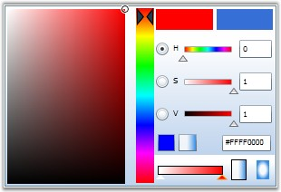
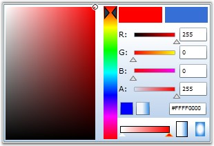
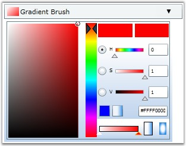
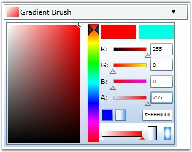

BrushSelector and BrushEdit controls can be displayed in two different color modes:
· HSV mode - This color model defines all the colors in terms of hue, saturation and value (brightness).
· RGB mode - This color model defines all the colors in combination of Red, Green and Blue.
 Note: The VisualizationStyle property is used
to switch between these modes.
Note: The VisualizationStyle property is used
to switch between these modes.
10. A. Setting the Color Selection Mode for BrushEdit
11. 1. Setting Color Selection Mode to HSV
The following code example illustrates how to set the Color Selection mode for BrushEdit to HSV.
|
[XAML]
<!-- Adding BrushEdit --> <syncfusion:BrushEdit Margin="20" VisualizationStyle="HSV" Name="brushedit"/> |
|
[C#]
// Creating an instance of the BrushEdit control. BrushEdit brushedit = new BrushEdit();
// Setting selection mode as HSV. brushedit.VisualizationStyle = ColorSelectionMode.HSV; |
The BrushEdit control with HSV color model is created.

Figure 352: BrushEdit with Color Selection Mode set to HSV
12. 2. Setting Color Selection Mode to RGB
The following code example illustrates how to set the Color Selection Mode of the BrushEdit control to "RGB".
|
[XAML]
<!-- Adding BrushEdit --> <syncfusion:BrushEdit Margin="20" VisualizationStyle="RGB" Name="brushedit"/> |
|
[C#]
// Creating an instance of the BrushEdit control. BrushEdit brushedit = new BrushEdit();
// Setting selection mode as RGB. brushedit.VisualizationStyle = ColorSelectionMode.RGB; |

Figure 353: BrushEdit with Color Selection Mode set to "RGB"
The BrushEdit control with RGB color model is created.
13. B. Setting the Color Selection mode for BrushSelector
3. Setting Color Selection Mode to HSV
The following code example illustrates how to set the Color Selection Mode of the BrushSelector control to "HSV".
|
[XAML]
<!-- Adding BrushSelector --> <syncfusion:BrushSelector Margin="20" VisualizationStyle="HSV" Name="brushselector"/> |
|
[C#]
// Creating an instance of the BrushSelector control. BrushSelector brushselector = new BrushSelector();
// Setting selection mode as HSV. brushselector.VisualizationStyle = ColorSelectionMode.HSV; |

Figure 354 BrushSelector with Color Selection Mode set to HSV
The BrushSelector control with HSV color model is created.
4. Setting Color Selection Mode to RGB
The following code example illustrates how to set the Color Selection Mode of the BrushSelector control to "RGB".
|
[XAML]
<!-- Adding BrushSelector --> <syncfusion:BrushSelector Margin="20" VisualizationStyle="RGb" Name="brushselector"/> |
|
[C#]
// Creating an instance of the BrushSelector control. BrushSelector brushselector = new BrushSelector();
// Setting selection mode as RGB. brushselector.VisualizationStyle = ColorSelectionMode.RGB; |

Figure 355: BrushSelector with Color Selection Mode set to RGB
The BrushSelector control with RGB color model is created.